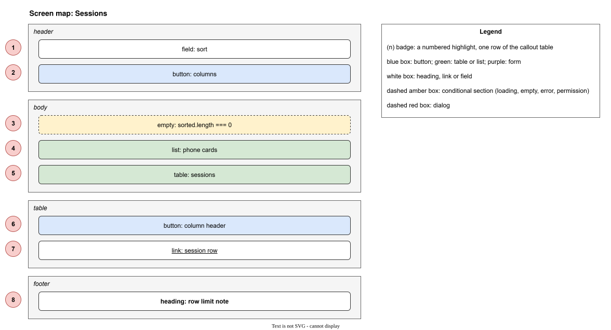

active approved inferred covers web/src/*, web/src/design-system/*
Sessions Screen Map
This map shows the list a reader uses to find one session and open it. It lets them sort, hide columns and see which sessions cost the most or failed. It also shows the cap on how many rows are drawn.
What the diagram shows
- The header carries the sort select and, on wider screens with rows, the column chooser
web/src/Sessions.tsx:281-296. - The body is an empty state, phone cards or a table, in that order of checks
web/src/Sessions.tsx:298-371. - Each header cell is a sort button and each row opens the session
web/src/Sessions.tsx:338-345web/src/Sessions.tsx:352-356. - At most a fixed number of rows is drawn and the note says so
web/src/Sessions.tsx:48web/src/Sessions.tsx:373-379.
Capability and related functionality
Opening a row shows Session Workspace Screen. The row limit is the rule recorded in Web Specification, and the view is reached from App Screen. The journey through it is drawn in Web User Journey.
Sessions Screen screen map

Code references
| Badge | Element | Code |
|---|---|---|
| 1 | <SortSelect sort |
web/src/Sessions.tsx:286-289 |
| 2 | <ColumnChooser columns |
web/src/Sessions.tsx:292-292 |
| 3 | sorted.length === 0 empty section |
web/src/Sessions.tsx:298-298 |
| 4 | <SessionCard phone cards |
web/src/Sessions.tsx:306-323 |
| 5 | <Table sessions |
web/src/Sessions.tsx:329-332 |
| 6 | <SortButton column header |
web/src/Sessions.tsx:338-343 |
| 7 | <TableRow session row |
web/src/Sessions.tsx:352-354 |
| 8 | <PanelNote row limit note |
web/src/Sessions.tsx:374-374 |